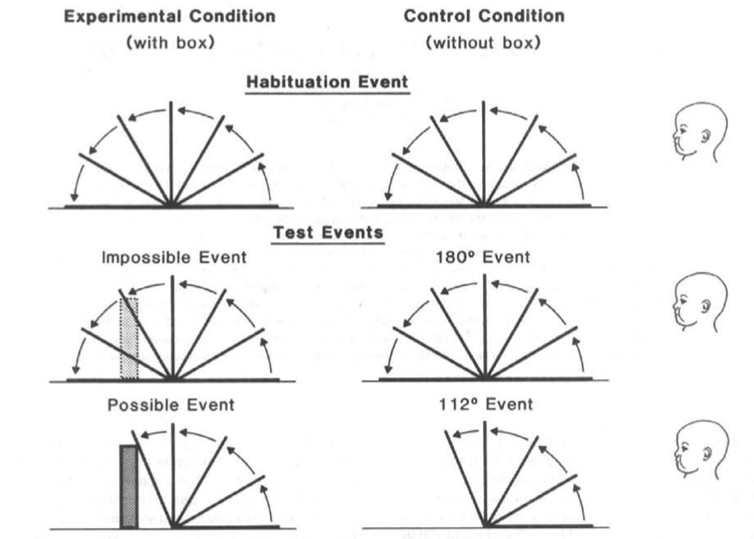
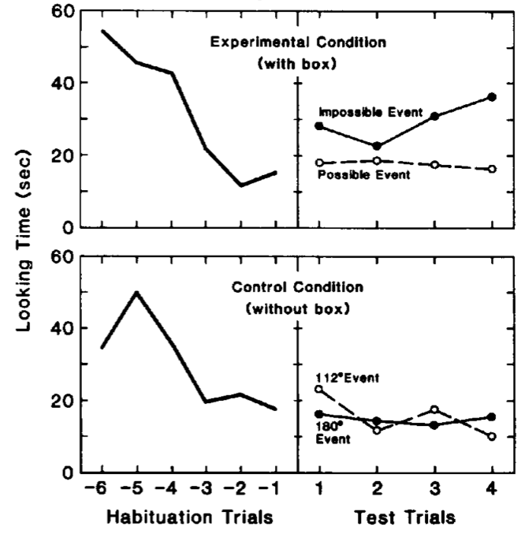

Press the right key for the next slide (or swipe left)
also ...
Press the left key to go backwards (or swipe right)
Press n to toggle whether notes are shown (or add '?notes' to the url before the #)
Press m or double tap to see a menu of slides

Origins of Mind
Lecture 02
s.butterfill@warwick.ac.uk
\def \ititle {Origins of Mind}
\def \isubtitle {Lecture 02}
\
\begin{center}
{\Large
\textbf{\ititle}: \isubtitle
}
\iemail %
\end{center}
recap
The question for this course is ...
We are going to approach this question by examining the evidence from developmental science,
exploring how it bears on philosophical positions like nativism and empiricsm,
and identifying philosophical problems created by the evidence.
Our focus is on two breakthrough sets of findings.
One concerns core knowledge, the other social interaction.
One problem for us is that these two sets of findings are typically considered in isolation,
although I think there are strong reasons to suppose that understanding the origins of knowledge
will require thinking about both core knowledge and social interaction.
challenge
My working hypothesis is that we can't understand early forms of social interaction without core knowledge;
and that we can't understand how core knowledge leads to knowledge proper without social interaction.
The challenge is to understand how core knowledge and social interaction conspire in the emergence of knowledge.
Well, that's the big picture.
But at this stage in the course I simply want to introduce you to some of the key findings and the puzzles they raise.
\section{Objects vs Features}
The question for this lecture concerns knowledge of physical objects.
When do humans first come to know simple facts about particular physical objects?
To illustrate, consider the fact that this telephone is located here,
or the fact that this telephone is square.
I take it that no one is born knowing any such facts.
So there was a time when you knew no facts about particular physical objects at all,
and then, sometime later, you came to know some such facts.
How did you make this transition?
How do humans first come to know facts about particular objects?
(For the rest of this lecture
I'll drop the qualifier `physical' since this is all about physical objects as opposed to,
say, abstract objects like numbers or forms.)
knowledge of physical objects

objects vs features
[features picture]
First, what does knowledge of physical objects involve?
One way to approach this question is by contrasting objects with features.
Physical objects contrast with features in three ways
%
\begin{enumerate}
%
\item physical objects have boundaries whereas mere features do not. (This needs qualifying
because there is a sense in which we can regard features as having boundaries; but when it
comes to
features, the boundaries are merely projections. To see the contrast, consider that we could
all be permanently mistaken about the boundaries of a physical object but not about the
boundaries of a feature---another species could not discover a million years from now that
humans are wrong about the boundaries of this feature, that they thought it was one feature
whereas really it is two.)
%
\item physical objects persist in a way that features do not. You cannot ask, concerning a
feature now, whether this is the same feature as some time ago. At least, you cannot ask this
in the same sense that you can ask it about a physical objects.
%
\item physical objects can interact with each other in way that features cannot: they
can causally interact.
%
\end{enumerate}
%
Imagine not knowing anything at all about particular physical objects and living in a world
consisting entirely of features. Nothing interacts, there are only patterns.
And things outside your perceptual field do not exist.
From your point of view, the world is limited your perceptual field now.
Three requirements
Contrasting features with physical objects suggests three requirements on having any
knowledge about particular physical objects.
- segment objects
- represent objects as persisting (‘permanence’)
- track objects’ interactions
Knowledge of objects depends on abilities to (i) segment objects, (ii) represent them as
persisting and (iii) track their interactions.
Let's look at each of these in turn.
How do infants and adults discern where one object begins and another ends?

[ducks picture]
The way objects are ordinarily arranged in space, so that one occludes parts of another,
prevents us from doing this in any simple way.
[features picture]
Recall my imaginary world of features. In this world there is no principled way of saying
where one object ends and another begins.
As I said, features differ from genuine objects in not allowing us to make sense of the question of
whether we are carving them at their joints.
So an ability to segment physical objects is not necessary for knowing anything about
mere features but it is probably necessary for having any knowledge
concerning particular physical objects.
So much for the first requirement (segmentation) ...
... what about the second requirement, representing objects as persisting?

When Hannah hides behind the logs and a girl later pops up, we can ask whether it is Hannah
again or another girl.
That is, we know that objects can persist despite disappering from view---and despite becoming
entirely imperceptible.

[features picture]
Contrast features again. You might see this red feature moving across the scene.
But suppose it disappears and then, later a similar looking feature appears.
There is no fact of the matter about whether this is the same feature or a different one.
As I mentioned before, in the case of features we can't make sense of them as persisting over
time, or as there being interruptions in their presence.
I suppose, then, that to have knowledge concerning physical objects rather than merely
concerning features, it is necessary to be able to represent objects as persisting
even while unperceived.
That was the second requirement, now there's just one more ...
This is the requirement that you can track objects' interactions.

Objects causally interact with each other; one pan supports another, two people collide and
bounce off each other. Relatedly, objects have counterfactual lives: sometimes you can say,
truly, that if that barrier had not been there, the car would be at the bottom of the valley
now.

[features picture]
As I mentioned, this is another respect in which objects are distinct from features.
Features do not causally interact with each other and they do not have counterfactual lives
either.
This point of contrast suggests that knowledge concerning physical objects as opposed to mere
features requires at least a limited ability to track causal interactions.
So reflection on how physical objects differ from mere features suggests three minimal
requirements on having any knowledge at all of facts about particular physical objects.
Knowing things about particular physical objects, unlike knowing things about mere features,
requires abilities to segment objects, to represent them as persisting, and to track at least
some of their cauasl interactions.
the question
As mentioned, the question we'd like to answer is how humans first come to know any facts about
particular physical objects.
Before you know any such facts you live in something like a world of mere features.
In this feature world, nothing persists and there are no causal interactions only patterns.
And nothing exists except in your perceptual fields.
Now the question of how humans make this transition to knowing some facts about particular
physical objects is too hard to face head on. But we can approach it by asking,
The question for this lecture is,
How do humans come to meet the three requirements on knowledge of objects?

Segmentation and the Principles of Object Perception
\section{Segmentation and the Principles of Object Perception}
How do humans segment objects?
first requirement: segmentation
Recall that the way objects are ordinarily arranged in space, so that one occludes parts of another, prevents us from doing this in any simple way.
Infants from 4.5 months of age can use featural information to segment objects.
using featural information
Needham (1998)
In Amy Needham's 1998 study, 4.5 months old infants were shown a display like this.
Featural information---the difference in textures of the objects---suggests that these are two
separate objects. But can infants use this information to detect that there are two objects?
Some infants were then shown the object being moved like this, so that it is clearly two
separate objects.
Other infants where shown the object being moved like this.
If infants think there is one object, they should expect the second kind of movement.
But if infants think there are two objects---if, that is, they can use the featural
information to segment objects---then they should expect the former kind of movement.
What were the results? ...

Needham (1998, figure 4)
Needham's results are evidence that infants from 4.5 months of age can use featural information
to segment objects.
violation-of-expectations
[I need to explain the method used in violation-of-expectations, and to compare it with
the method of habituation.]
A violation-of-expectations experiment involves a pair of events.
Infants are divided into two groups; one group sees one event, the other sees the other event.
(This is the between-subject version; it might also be done within subjects.)
The experimenter measures how long the infants look at each event.
Of interest is whether infants reliably look longer at one of the two events.
If they do, this is interpreted as evidence that this event---the one infants reliably look
longer at---is in some way interesting to them.
And, if the events are well chosen, their interest indicates that the event violates an
expectation they have.
In the experiment we are considering, the expectation violated is the expectation that
the two objects should move separately.
At this point you might well ask, What is an expectation?
This is an important question but let me postpone it for now.
To return to Needham's experiment, interestingly, 4.5 month old infants were able to succeed
even when the point of contact between the two objects was occluded, as in this diagram.

Needham (1998, figure 6)
These are the results for 4.5 month old infants.
One further thing: infants can also use shape information in segmenting objects, and shape information appears to trump featural information \citep{needham:1999_role}.

Needham (1998, figure 7)
Can we fully explain how infants segment objects just by appeal to features?
To see why it couldn't be just features that we use to segment objects, consider
some more cases ...
Could it all be features?
`infants perceive the boundaries of a partly hidden object by analyzing the movements of
its surfaces: infants perceived a connected object when its ends moved in a common
translation behind the occluder. Infants do not appear to perceive a connected object
by analyzing the colors and forms of surfaces: they did not perceive a connected object
when its visible parts were stationary, its color was homogeneous, its edges were aligned,
and its shape was simple and regular' \citep{kellman:1983_perception}.
Here is an occluded object---a stick behind a box.
The movement is enough to convince 4-month-old infants that there is just one stick even
though they never see its middle \citep{kellman:1983_perception}.
We can discover this by measuring how different displayes cause them to dishabituate.
Spelke (1990, figure 2)
After being habituated to this this, 3-month-old infants were shown one of two displays.

Kellman & Spelke (1983, figure 3)
And here are the results (subjects were 3-month-old infants).

Kellman & Spelke (1983, figure 4)
The fact that infants can correctly segment partially occluded objects based on their movements
already indicates that they can't be thinking about features only.
For more evidence, consider this display.
The two parts of the moving object are featurally different.
Despite this, infants expect to see a single connected object behind the block
(\citealp{kellman:1983_perception}, Experiment 6; \citealp{Spelke:1990jn}).

Kellman & Spelke (1983, figure 13)
Here are the test stimuli (each groups is shown one or the other).

Kellman & Spelke (1983, figure 13)
And here are the results.
Subjects in this experiment were 4-month-old infants.
So we saw that infants can use featural information to segment objects,
but the principle of cohension can trump featural indicators of difference.
So infants' abilities to segment objects are not based entirely on recognising features.

Kellman & Spelke (1983, figure 14)
If infants do not rely only on features to do this, then
how do infants segment the objects in the displays we've just been seeing?
If not by features, then how? Principles!\citet{Spelke:1990jn} suggests that infants rely on a set of principles to segment objects.
But what are the principles?
Recall this diplay with on object moving behind a stationary block.
What kind of principle could be used to identify that the occluded thing is a single object?
Kellman & Spelke (1983, figure 13)
rigidity—‘objects are interpreted as moving rigidly if such an interpretation exists’
\citet{Spelke:1990jn} suggests the principle of rigidity.
This principle says that ‘objects are interpreted as moving rigidly if such an interpretation
exists’
The hypothesis that this principle describes in part how infants segment objects correctly
predicts that they will treat the moving occluded stick as a single object.
But rigidity is not the only principle we need to explain how infants segment objects ...
cohesion:
‘two surface points lie on the same object only if the points are linked by a path of connected
surface points’
(Spelke 1990)
Another principle which seems to be involved in segmenting objects is the principle of
cohension.
According to this principle, ‘two surface points lie on the same object only if the points are
linked by a path of connected surface points’ \citep{Spelke:1990jn}.
Spelke (1990, figure 4)
For example, objects arranged as on your left were percevied by 3-month-olds as two objects,
whereas infants treated the displays like that on your right as if they were one object.
(This was measured using a habituation paradigm \citep{kestenbaum:1987_perception}. Infants
were habituated to the display. Then either one object's position changed, or both objects'
positions changed but in such a way as to preserve the overall configuration of the two
objects. Infants could show that they perceived the configuration as a single object by
looking longer when just one object's position changed.)
Here's a second example using moving rather than static stimuli and a different method:
reaching rather than looking.
Let me explain the stimuli first.
How does the principle of cohension apply to this moving display?
As we just formulated it, it doesn't seem to. After all, in both cases all points on the
stimuli are lnked by a path of connected surface points.
However, the principle should be read as saying more implying that:
‘When two surfaces are separated by a spatial gap (as in Figure 4a) or undergo relative motions
that alter the adjacency relations among points at their border (as in Figure 4i), the
surfaces lie on distinct objects’ \citep[p.\ 49]{Spelke:1990jn}.
The question is, Do infants segment these objects in accordance with the Principle of Cohesion?
\citet[Experiment 2]{spelke:1989_reaching} used a reaching experiment with 5-month-old infants.
The smaller of the two objects was always closer to the infants.
Infants should reach more often for the smaller, nearer object when they represent the simuli
as two separate objects than when they represent it as a single object.
(This is not obvious, but the researchers do justify this claim carefully
\citep[p.\ 186]{spelke:1989_reaching}.)
So the idea is that by comparing how often 5-month-olds reach for the smaller object, we can
see whether they treat it as a separate object in one case but not the other.
To make this vivid, let me show you their apparatus ...
Spelke et al 1989 figure 1.
Here you can see the infant sitting in front of the two objects which could be made to move
together or separately.
Spelke et al 1989 table 2.
And here are the results. You don't need to read the table, I put it here just to mention
that this is a within-subject design.
[*explain within- vs between-subject].
Overall, infants reached to the smaller, top object more often when they moved in opposite
directions than when they moved together.
Given the background assumption, this is evidence that infants segmented the objects
differently depending on their motions, and did so in just the way that adults would
\citep[Experiment 2]{spelke:1989_reaching}.
\citet{Spelke:1990jn} proposes that our ability to segment objects depends on four principles.
We've already seen two of these in action (rigidy and cohesion), and we will shortly see
that a further principle is needed, too.
Principles of Object Perception
\textbf{Principles of Object Perception \citep{Spelke:1990jn}}
- cohesion—‘two surface points lie on the same object only if the points are linked by a path of
connected surface points’
- boundedness—‘two surface points lie on distinct objects only if no path of connected surface points
links them’
- rigidity—‘objects are interpreted as moving rigidly if such an interpretation exists’
- no action at a distance—‘separated objects are interpreted as moving independently of one another if such an
interpretation exists’
(Spelke 1990)
We've already seen this principle in action.
Boundedness is just the converse of cohesion.
Strictly speaking, cohension allows us to infer that we have two
distinct objects, but not to infer that we have a single object---for that, we need boundedness.
So when I was talking a moment ago about the Principle of Cohesion, strictly speaking I was
also appealing to the Principle of Boundedness.
We saw an example of the principle of rigidity in action earlier, with the moving stick
experiment.
The final Principle, no action at a distance, is a converse to rigidity.
I don't want to obsess too much about the details of these principles.
It isn't important that there are exactly four, nor are their precise formulations.
(Surely the principles as stated here are not exactly the principles we need to characterise
how infants segment objects.)
What I want us to focus on is just the fact that we can use a small number of principles to
characterise how infants segment objects in a way that generates testable predictions,
and these principles have been confirmed.
This motivates us to ask ...
What is the status of these principles?
Spelke’s position might be put like this:
\begin{enumerate}
\item We (as perceivers) start with a cross-modal representation of three-dimensional
perceptual features which includes their locations and trajectories.
\item Our task is to get from these representations of features to representations of objects.
\item \emph{Descriptive component} We do this as if in accordance with certain principles
(cohesion, boundedness, rigidity, and no action at a distance).
\item \emph{Explanatory component} We acquire representations of objects because we apply the
principles to representations of features and draw appropriate inferences.
\end{enumerate}
The key point for our purposes is the explanatory component.
The principles are not supposed to be merely heuristics for describing and predicting infants’
performance on preferential looking tasks.
Rather, these principles are supposed to explain why infants look longer at some things than at
others.
This what motivates the hypothesis that infants know these principles and use them in
reasoning about objects: unless this hypothesis is true, it’s hard to understand how the
principles could have explanatory relevance.
Marr & Chomsky
Inspiration for Spelke’s view comes from Marr and Chomsky.
Marr showed that many visual processes can be modelled as inferences.
And Chomsky pioneered the idea that our knowledge of language depends on knowledge of
principles of syntax.
What unites these three cases, Spelke on object segmentation, Marr on vision and Chomsky on
syntax?
It’s that they are straightforwardly cognitivist in appeal to knowledge and inference.
Principles are known, and they are used via a process of inference.
(There’s a nice quote from Fodor on your handout underlining this point.)
‘Chomsky’s nativism is primarily a thesis about knowledge and belief; it aligns problems
in the theory of language with those in the theory of knowledge. Indeed, as often as not,
the vocabulary in which Chomsky frames linguistic issues is explicitly epistemological.
Thus, the grammar of a language specifies what its speaker/hearers have to know qua speakers
and hearers; and the goal of the child’s language acquisition process is to construct a
theory of the language that correctly expresses this grammatical knowledge.’
\citep[p.\ 11]{Fodor:2000cj}
So what is the status of Spelke’s principles of object perception?
Consider what I shall call the Simple View ...
\textbf{The simple view}
The principles of object perception are things that we know or believe,
and we generate expectations from these principles by a process of inference.
The simple view is that the Spelke principles are just known in whatever sense anything is
known or believed.
(We can't say the principles are known because strictly speaking they are not truths but only
heuristics.)
The simple view isn’t exactly Spelke’s, but it’s a useful starting point for discussion.
The Simple View is worth considering in its own right because it is so, well, simple.
But our interest in it may be piqued by the fact that
Spelke herself appears to have accepted the Simple View at one point in her thinking:
‘objects are conceived: Humans come to know about an object’s unity, boundaries, and
persistence in ways like those by which we come to know about its material composition or its
market value’
\citep[p.\ 198]{Spelke:1988xc}.
Spelke (1988, p. 198)
Now you might think that the case for these principles is not yet very strong.
In that case, asking hard questions about their status would hardly be necessary.
So let’s consider further evidence for these principles.
We can do this by turning from segmentation (which was our first requirement on knowledge of
objects)
to representing objects as permanent.

\section{Permanence}
Three requirements
- segment objects
- represent objects as persisting (‘permanence’)
- track objects’ interactions
[*TODO*] Integrate converging findings on anticipatory (predictive) looking
\citep{rosander:2004_infants}: `The obtained results are in general agreement with the numerous
habituation studies that have investigated infants' emerging ability to represent temporarily
occluded moving objects. The individual data show that 9–12-week-old infants begin to predict
the reappearance of the object towards the end of the centrally occluded trials.'
[*TODO*] integrate this on reaching: \citep{vanwermeskerken:2011_anticipatory}
(Interpretation is a bit out there, but it nicely illustrates how occlusion duration
can affect reaching at around 7 months of age.)
[*TODO*] integrate this ERP measure of permanence: \citep{kaufman:2005_oscillatory}
\textit{Object permanence}:
Object permanence:
the ability to know things about, or represent, objects you aren't currently perceiving.
Permanence is a matter of living in a world where things don't go out of existence when unperceived.
You may not be perceiving your keys now, but there is a fact of the matter about where they are and you know this. (If not where they are, then at least you know that there is a fact about where they are.)
‘young infants’ physical world, like adults’, includes both visible [perceived] and hidden objects’
(Wang et al 2004, p. 194)
Although segmentation and permanence are conceptually distinct, they are closely related
because movement is a clue to segmentation and movement sometimes invovles occlusion.
This becomes evident if we think about one more principle of object perception, the principle of continuity.
principle of continuity---
an object traces exactly one connected path over space and time
\emph{Principle of continuity} An object traces exactly one connected path over space and time \citep[p.\ 113]{spelke:1995_spatiotemporal}.
We easily understand this principle by considering cases that accord with, and violate, it.
Here is motion in accord with it.
Spelke et al (1995, figure 1)
Here is one violation of continuity.
And here is another violation of continuity.
\citet{spelke:1995_spatiotemporal} tested sensitivity to the principle of continuity in 4-month-old infants.
The infants were habituated to one of two displays.
Spelke et al (1995, figure 2)
Now in the continuous event we should perceive one object whereas in the discontinous event we should perceive two objects.
But is this about segmentation or persistence?
Segmentation since it's about distinguishing one object from another;
and persistence since it's about representing temporarily unperceived objects.
They were then shown one of two test stimuli.
The measure was the degree of dishabituation as measured by looking time.
Spelke et al (1995, figure 3)
What's beautiful about these results is that the two groups show opposite patterns of dishabituation.
Recall that the continuity principle could be violated in two ways.
We've just seen a `continuity violation'. Next I want to show you a solidity violation.
Further evidence that infants represent unperceived objects from around four months
includes Baillargeon's famous drawbridge study.
These are the test events from Experiment 1 of Baillargeon et al's 1987 study.

\begin{center} \citealp{baillargeon:1987_object} figure 1 \end{center}
Baillargeon et al (1987, figure 1)
'The habituation event was exactly the same as the impossible event, except that the yellow box was absent.' (Baillargeon et al 1985, 200)
These are the results from Experiment 1 of Baillargeon et al's 1987 study.

\begin{center} \citealp{baillargeon:1987_object} figure 2 \end{center}
source: Baillargeon et al (1987, figure 2)
I'm presenting this experiment as showing that infants represent objects as persisting, and do so
in accordance with the Principle of Continuity. However, the experiment is also about
causal interactions between objects. After all, infants are demonstrating sensitivity to
the fact that a solid object must stop the drawbridge from rotating all the way back.
Some have been critical of the methods used in this experiment.
But not everything hangs on this experiment.
Fortunately there are at least a hundred further experiments which provide evidence pointing in the same direction.
Here we'll look at just one more experiment.
Here is another way of demonstrating object permanence.
This experiment will suggest, incidentally, that the principles we have seen---continuity,
rigidity and the rest---don't fully explain how infants succeed in representing objects as persisting.
The subjects were 4 month old infants.
They were shown a large object disappearing inside a small conatiner, or behind a narrow screen.
Wang et al (2004, figure 1)
The experiment was very simple.
All the experimenters did was measure how long infants looked in at the two events.
Infants looked longer at the narrow-occulder event.
Wang et al (2004, figure 2)
There was also a control condition.
In the control condition, infants saw a small rather than a large object.
Control condition

Wang et al (2004, figure 1)
Here’s the experimental condition again for comparison.
Experimental condition

Wang et al (2004, figure 1)
And here's the control condition again.
Control condition
Wang et al (2004, figure 1)
As you can see, there was a difference in looking times only in the experimental condition.

Wang et al (2004, figure 2)
By the way, this experiment is interesting partly because it doesn't use habituation, as
Baillargeon's earlier drawbridge experiment did.
It is also hard to explain the result by appeal only to the Principle of Object Perception
that we have so far listed.
We're considering abilities to represent objects as persisting even when not perceived.
Where are we?
We've seen that characteristing these abilities in terms of Principles of Object Perception
enables us to make testable predictions, many of which have been confirmed.
Importantly, we made the same claim about these Principles for abilities to segment objects.
The abilities to segment objects and to represent them as persisting are conceptually
distinct.
However it may be that beliefs about a single set of principles underlies both abilities.
This is one of Spelke's brilliant insights.
Where does this leave us?
We still want to know about the status of the principles of object perception.
As I said before, it is one thing to say they are descriptively adequate and another thing
to understand how the Princples relate to cognitive mechanisms (processes and
representations).
But now the question about the status of these Principles is more pressing because
the claim that these principles of object perception explain infants' (and adults',
and other primates') performance is now harder to reject.
It's harder to reject because we have converging evidence for the psychological reality of
the principles from both segmentation and permanence.
principles of object perception
segmentation
permanence
... (?)
On the status of the Principles, consider this claim about the interpretation of the
results of a violation-of-expectation experiment:
‘evidence that infants look reliably longer at the unexpected than at the expected event is
taken to indicate that they (1) possess the expectation under investigation; (2) detect the
violation in the unexpected event; and (3) are surprised by this violation. The term
surprise is used here simply as a short-hand descriptor, to denote a state of heightened
attention or interest caused by an expectation violation.’ \citep[p.\ 168]{wang:2004_young}
‘evidence that infants look reliably longer at the unexpected than at the expected event is taken to indicate that they
‘(1) possess the expectation under investigation;
‘(2) detect the violation in the unexpected event; and
‘(3) are surprised by this violation.’
‘The term surprise is used here simply as a short-hand descriptor, to denote a state of heightened attention or interest caused by an expectation violation.’
(Wang et al 2004, p. 168)
What does ‘surprise’ mean here?
So this is not surprise in a sense that requires awareness of a change in one's own beliefs.
It is rather that there is a particular way in which the detection of the violation is
manifested.
Note that we are talking about expectations.
This raises two questions: How do we arrive at these expectations? and What is an
expectation?
Spelke's claim is that we arrive at these expectations by inference from the Principles of
Object Perception, including the principle of contintuity.
So what is an expectation?
On the simple view we are adopting for now, an expectation is just a belief.
The attraction of this simple view is it allows us to take literally the claim that we know
the principles of object perception and arrive at expectations by a process of inference.
Here is an illustration of the Simple View ...
‘To make sense of such results [i.e. the results from violation-of-expectation tasks], we … must assume that infants, like older learners, formulate … hypotheses about physical events and revise and elaborate these hypotheses in light of additional input.’
\citep[p.\ 329]{Aguiar:2002ob}
(Aguiar and Baillargeon 2002: 329).
So infants formulate hypotheses
And infants revise and elaborate these hypotheses in light of additional input.
Now you might suggest that these researchers in talking about formulating and revising
hypotheses do not mean to suggest that infants are doing this in the sense that you or I
might, and so do not mean to imply that they have beliefs or knowledge. But ...
... they explicitly specify that infants do this ‘like older learners’.
So our current working hypothesis about the Principles is the Simple View.
But before we go any further, let me say a little more about the third thing on our list,
causal interactions ...
principles of object perception
segmentation
permanence
... (?)
As an aside I wanted to mention that object permanence is found in nonhuman animals
including ...
Object permanence is found in nonhuman animals including
\begin{enumerate}
- monkeys (Santos et al 2006)
\item monkeys \citep{santos:2006_cotton-top}
- lemurs (Deppe et al 2009)
\item lemurs \citep{deppe:2009_object}
- crows (Hoffmann et al 2011)
\item crows \citep{hoffmann:2011_ontogeny}
- dogs and wolves(Fiset et al 2013)
\item dogs and wolves \citep{fiset:2013_object}
- cats (Triana & Pasnak 1981)
\item cats \citep{triana:1981_object}
- chicks (Chiandetti et al 2011)
\item chicks \citep{chiandetti:2011_chicks_op}
- dolphins (Jaakkola et al 2010)
\item dolphins \citep{jaakkola:2010_what}
- ...
\item ...
\end{enumerate}
(Wolves matter because their performing similarly to dogs that show dogs' performance probably isn't a consequence of domestication, as \citet{fiset:2013_object} argue.)
Most of these animals have been tested using search as the measure, rather than looking times.
(This will be important later.)
Note also that many of these studies contrast visible with invisible displacements, or talk about Piaget's stages of object permanence. For simplicity, that's not something I'm covering.
[Aside] Comparative research is hard.

‘The real difficulty is that there is no reward for the great majority of cats in retrieving an unmoving, silent, odor-free, covered-up object from which their attention has been distracted, and hence the cats will not show that they know where it is.’
(Triana & Pasnak 1981, p. 138)
peer review: what are you looking for?
This is going to be a bit awkward, especially as we don't really know each other yet,
but I want to discuss feedback before submission of an assessed essay ...
Last week I mentioned that I want to give you feedback on work prior to submitting it.
In particular, I want to discuss an essay outline and a draft of your essay.
My aim is to improve feedack to that: you have opportunities to act on feedback (by,
for instance, revising an outline or essay), (b) you receive feedback from peers as well as
tutors or lecturers, and you can combine feedback from others (peers, and lecturers or
tutors) with self-assessment.
Overall, my aim is to make feedback part of a continuing dialog rather than something you get
only after you've done all the thinking on an issue that you're going to do.
I can only do this---and it only makes sense to do this---if you think this is a good idea.
You might think that it involves too much work on your part, or that it is somehow unfair.
Now I was assuming it would be ok because the students last year seemed to like it a lot.
But then it struck me that maybe you are different. So please let me know.
Are you happy with the system of feedback I'm proposing or would you prefer it if I stick to
the default approach?
feedback and assessment

\section{Causal Interactions}
The third requirement on knowledge of objects is an ability to track objects through causal interactions.
Here we're interested in very simple causal interactions, such as the collision of two balls or the interaction of a ball with a barrier.

Consider this case where a ball falls and lands on a bench.
Suppose that there was a barrier in front of the bench, like the dotted line.
Because the bench protrudes from the barrier, you could easily see where the ball will land.
But of course you can only see this if you know that barriers stop solid balls.
Spelke used this observation to provide evidence that 4-month-old infants can track objects' causal interactions.
Spelke et al 1992, figure 2
Infants were habituated to a display in which a ball fell behind a screen, the screen came forwards and the ball was revealed to be on the ground, just where you'd expect it to be.
After habituation infants were shown one of two displays.
Infants in the 'consistent group' were shown this.
Whereas infants in the 'inconsistent group' were shown this.
What should we predict?
If infants were only paying attention to the shapes and ignoring properties like solid, they should have dishabituated more to the consistent than to the inconsistent stimlus.
After all, that stimlus is more different from the habituation stimulus in terms of the surfaces.
But if infants were are to track some simple causal interactions, then they might dishabituate to the 'inconsistent' stimulus more than to the 'consistent' stimulus because that one involves an apparent violation of a physical laws.
Here are the results.
(Recall that the subjects are 4-month-old infants.)

Spelke et al 1992, figure 3
This is evidence that infants can track causal interactions among objects, even when those causal interactions are occluded.
Chimpanzees also understand something of phyiscal interactions insofar as their looking times show sensitivity to support relations \citep{cacchione:2004_recognizing}.

Cacchione & Krist 2004, figure 2
Here are the results.

Cacchione & Krist 2004, figure 3
Lots of studies like this have been done with infants in their first six months of life.
Dogs can do this too.
This experiment used a search measure rather than a looking time measure.
Dogs had to retrieve a treat. The right location to search depended on whether the barrier was present or absent.

Kundey et al 2010, figure 1
The results show brilliant performance.
'Dogs correctly searched the near location when the barrier was present and the far location when the barrier was absent. They displayed this behavior from the first trial' \citep{kundey:2010_domesticated} (from the abstract).

Kundey et al 2010, figure 2
How do infants, adult humans and nonhumans track causal interactions among objects (including causal relations like support)?
Spelke suggests that the principles of object perception can explain this.
how?
For example, the position of an object falling onto a bench is predicted by the principle of continuity mentioned earlier.
\emph{Principle of continuity} An object traces exactly one connected path over space and time \citep[p.\ 113]{spelke:1995_spatiotemporal}.

Spelke et al (1995, figure 1)
(The other principles of object perception are on your handout.)
Spelke et al 1992, figure 2
Spelke et al (1995, figure 1)
This is Spelke's brilliant insight.
‘object perception reflects basic constraints on the motions of physical bodies …’
(Spelke 1990: 51)
\citep[p.\ 51]{Spelke:1990jn}
‘A single system of knowledge … appears to underlie object perception and physical reasoning’
\citep[p.\ 175]{Carey:1994bh}
(Carey and Spelke 1994: 175)
I think there's something here that should be uncontroversial, and something that's more controversial.
But first let me recap ...
\section{Recap and Questions}
As I said at the start, knowledge of objects depends on abilities to (i) segment objects, (ii) represent them as persisting and (iii) track their interactions.
Three requirements
- segment objects
- represent objects as persisting
- track objects’ interactions
\emph{Question 1} How do humans come to meet the three requirements on knowledge of objects?
Until quite recently it was held, following Piaget and others, that these three abilities appeared relatively late in development.
However, as we saw last week, more recent investigations provide strong evidence that all three abilities are present in humans from around four months of age or earlier.
Infants' looking behaviours indicate that they have expectations concerning segmentation, persistence and causal interactions.
\emph{Discovery 1} Infants manfiest all three abilities from around four months of age or earlier.
We've seen that infants' abilities to segement objects, represent them as persisting and track their causal
interactions can be described by appeal to a single set of principles,
the principles of cohension, boundedness, rigidity and no action at a distance.
This suggests that
\emph{Discovery 2} Although abilities to segment objects, to represent them as persisting through occlusion and to track their causal interactions are conceptually distinct, they may all be consequences of a single mechanism (in humans and perhaps in other animals).
Spelke suggests, further, that these principles of object perception explain infants' looking behaviours.
This means we must ask
\emph{Question 2} What is the relation between the principles of object perception and infants’ looking behaviours?
Principles of Object Perception
- cohesion—‘two surface points lie on the same object only if the points are linked by a path of connected surface points’
- boundedness—‘two surface points lie on distinct objects only if no path of connected surface points links them’
- rigidity—‘objects are interpreted as moving rigidly if such an interpretation exists’
- no action at a distance—‘separated objects are interpreted as moving independently of one another if such an interpretation exists’
(Spelke 1990)
Let me explain this question.
Let's suppose that Spelke is right that the principles are \emph{formally adequate}.
That is, someone who knew the principles and had unlimited cognitive resources could use the principles to infer the track physical objects through simple causal interactions like those we've been considering.
(So formal adequacy is a question of what is possible in principle.)
I don't think we should question this.
- formal adequacy
- descriptive adequacy
I also want to allow that Spelke's principles are \emph{descriptively adeqaute}.
That is, they successfully describe how infants, adults and nonhumans deal with various situations.
We can think of this in terms of \emph{as if}: it is as if these individuals are using the principles.
But we have yet to come to what really matters to Spelke and to us.
For accepting formal and descriptive adequacy is consistent with denying that Carey and Spelke's claim that ‘A single system of knowledge … appears to [does] underlie object perception and physical reasoning’ \citep[p.\ 175]{Carey:1994bh}.
That's because formal and descriptive adequacy leave open the question of what mechanisms are involved in tracking physical objects' causal interactions.
- mechansim
Finally, we might claim that these principles are realised in the cognitive mechansisms invovled in object tracking.
It just here that we have to face the second question, What is the relation between the principles of object perception and infants’ looking behaviours?.
(e.g. the simple view)In answer to Q2, I suggested that we start with the simple view. The \emph{simple view} is the view that the principles of object perception are things that we know or believe, and we generate expectations from these principles by a process of inference.The attraction of the Simple View is that it promises to explain infants' sensitivity to objects' boundaries, their persistence and their causal interactions as manifested in a variety of looking behaviours.But, as we're about to see, the Simple View is completely wrong.

\section{A Problem}
As just mentioned, the Simple View is the view that the principles of object perception are things that we know or believe, and we generate expectations from these principles by a process of inference..
scientific intuitive arguments against the simple view
Why must we reject the simple view?
You might have intuitive arguments against it.
It is perhaps hard to accept that four-month-old infants are in the business of formulating and revising hypotheses.
(Come to think of it, it’s quite hard to accept that adults typically acquire representations of unperceived objects by formulating and revising hypotheses.)
Also we might think of inference as something that a detective does. It is not obvious that the same process is occurring in infants.
But these considerations are narrowly intuitive.
Science sometimes indicates that intuitions are wrong, even intuitions about very fundamental things like space and time.
And, most importantly, if infants aren’t making inferences on the basis of knowlegde, what are they doing that enables them to pass violation-of-expectation tasks?
I think we shouldn't try to challenge the simple view on the basis of intution.
And we don't need to because there are also scientific reasons for rejecting the simple view.
One set of reasons concerns the apparent discrepancy between looking times and manual search ...
*(The basic idea is to say there's a discrepancy regarding BOTH (a) permanence and (b)
causal interactions)
conflicting evidence: permanence
Baillargeon et al 1987, figure 1
Recall this experiment which used habituation to demonstrate infants' abilities to represent
objects as persiting while unperceived (in this case, because occluded).
Infants can do this sort of task from 2.5 months or earlier \citep{Aguiar:1999jq}.
But what happens if instead of measuring how infants look, we measure how they reach?
\citet{Shinskey:2001fk} did just this.
Here you can see their appratus.
They had a screen that infants could pull forwards to get to an object that was sometimes
hidden behind it.
They made two comparisons.
First, were infants more likely to pull the screen forwards when an object was placed behind it?
Second, were how did infants' performance compare when the barrier was not opaque but transparent?
Shinskey and Munakata 2001, figure 1
Here are their results with 7-month old infants.
Shinskey and Munakata 2001, figure 2
Now we have the beginnings of a problem.
The problem is that, if the Simple View is right, infants should succeed in tracking persisting
objects regardless of whether we measure their eye movements or their reaching actions.
But there is a gap of around five months between looking and reaching.
Responses to the occlusion of a desirable object
The attraction of the simple view is that it explains the looking.
The problem for the simple view is that it makes exactly the wrong prediction about the reaching.
Can we explain the discrepancy in terms of the additional difficulty of reaching?
A lot of experiments have attempts to pin the discrepancy on this, or on other extraneous factors like task demands.
But none of these attempts have succeeded.
After all, we know infants are capable of acting because they move the transparent screen.
As Jeanne Shinskey, one of the researchers most dedicated to this issue says,
‘action demands are not the only cause of failures on occlusion tasks’
\citep[p.\ 291]{shinskey:2012_disappearing}
Shinskey (2012, p. 291)
If there were just one discrepancy, concerning performance, we might be able to hold on to the
Simple View. But there are systematic discrepancies along these lines.
Related discrepancies concerning infants' understanding of physical objects occur in the case
of their abilities to track causal interactions, too.
conflicting evidence: causal interactions
Recall this experiment about causal interactions, which used a habituation paradigm.
Now imagine a version which involved getting infants to reach for the object rather than simply looking.
What would the results be?
There is an experiment much like this which has been replicated several times, and which shows
a discrepancy between looking and searching.
Basically infants will look but not search.
Spelke et al 1992, figure 2
*todo

*todo

*todo

Here are the looking time results.

You can even do looking time and reaching experiments with the same subjects and apparatus \citep{Hood:2003yg}.
2.5-year-olds look longer when experimenter removes the ball from behind the wrong door, but don't reach to the correct door

search
here are the search results (shocking).

Hood et al 2003, figure 4
*todo: describe
**todo: Mention that \citep{mash:2006_what} show infants can also predict the location of the object (not just identify a violation, but look forward to where the object is)


Amazingly, 2 year old children still do badly when only the doors are opaque, so that the
ball can be seen rolling between the doors, as in this diagram \citep{Butler:2002bv}.

Similar discrepancies between looking and reaching are also found in some nonhuman primates,
both apes and monkeys (chimpanzees, cotton-top tamarins and marmosets).
(Some of this is based on the gravity tube task and concerns gravity bias.)
‘A similar permanent dissociation in understanding object support relations
might exist in chimpanzees. They identify impossible support relations in looking tasks,
but fail to do so in active problem solving.’
\citep{gomez:2005_species}
(Gomez 2005)
Likewise for cotton-top tamarins (Santos et al 2006) and marmosets (Cacchione et al 2012).
Note that this research is evidence of dissociations between looking and search in adult primates, not infants.
This is important because it indicates that the failures to search are a feature of the core knowledge system rather than a deficit in human infants.
‘to date, adult primates’ failures on search tasks appear to
exactly mirror the cases in which human toddlers perform poorly.’
‘to date, adult primates’ failures on search tasks appear to
exactly mirror the cases in which human toddlers perform poorly.’
\citep[p.\ 17]{santos:2009_object}
(Santos & Hood 2009, p. 17)
What about the chicks and dogs?
What about the chicks and dogs?
This isn't straightforward.
As I mentioned earlier, \citep{kundey:2010_domesticated} show that domestic dogs are good
at solidity on a search measure. And as we covered in seminars,
\citep{chiandetti:2011_chicks_op} demonstrate object permanence with a search measure in
chicks that are just a few days old.
Indeed, for many of the other animals I mentioned, object permanence is measured in search
tasks, not with looking times.
To speculate, it may be that the looking/search dissociation is more likely to occur in
adult animals the more closely related they are to humans.
But let's focus on the fact that you get the looking/search in any adult animals at all.
This is evidence that the dissociation is a consequence of something fundamental about
cognition rather than just a side-effect of some capacity limit.
So far we can draw two conclusions about infants' and adults abilities to track
interactions. My \textbf{first conclusion} from this section is that infants from around
4 months of
age or younger and nonhuman animals are able to track simple causal interactions.
conclusion so far: three things
I started by identifying three requirements for knowledge of physical objects:
abilities to segment objects, to represent them as persisting, and to track their causal
interactions.
My \textbf{second conclusion} is that a single set of principles likely underlies these
abilities. The ability to segment objects is bound up with the ability
to represent them as persisting and with the ability to track their interactions.
principles of object perception
segmentation
permanence
causal interaction
My \textbf{third conclusion} is that we have a problem.
The problem is that we have to reject the simple view.
Recall that the simple says that the principles of object perception are things that we know
or believe.
We must reject this view because it makes systematically incorrect predictions about actions
like searching for objects.
the simple view
But why is this a problem? Because, as we'll see, it is hard to identify an alternative.

Like Knowledge and Like Not Knowledge
\section{Like Knowledge and Like Not Knowledge}
I'm sorry to keep repeating this but I want everyone to understand where we are.
There are principles of object perception that explain abilities to segment objects, to represent them while temporarily unperceived and to track their interactions.
These principles are not known. What is their status?
the problem
The problem is quite general.
It doesn't arise only in the case of knowledge of objects but also in other domains
(like knowledge of number and knowledge of mind).
And it doesn't arise only from evidence about infants or nonhuman primates; it would also
arise if our focus were exclusively on human adults.
More on this later.
For now, our aim is to better understand the problem as it arises in the case of knowledge of objects.
generality of the problem
One hopeful alternative is to shift from talk about knowlegde to talk about representation.
Will this help?
Only as a way of describing the problem.
We need to say what we mean by representation.
The term is used in a wide variety of ways.
As I use it, representation is just a generic term covering knowledge, belief and much else besides.
knowledge representation
If we are going to substitute representation for knowledge,
we need to characterise what kind of representation we have in mind.
The term is tricky.
As \citet{Haith:1998aq} says, ‘no concept causes more problems in discussions of infant cognition than that of representation.’
‘no concept causes more problems in discussions of infant cognition than that of representation’
(Haith 1998)
\citep{Haith:1998aq}.
Take a paradigm case of representation.

The subject might not be the agent but some part of it.
That is, we can imagine that some component of an agent, like her perceptual system or motor system, represents things that she herself does not.
(Of course, to make sense of this idea we need to invoke some notion of system.)

The content is what distinguishes one belief from all others, or one desire from all others.
The content is also what determines whether a belief is true or false, and whether a desire is satisfied or unsatisfied.
There are two main tasks in constructing a theory of mental states.
The first task is to characterise the different attitudes.
This typically involves specifying their distinctive functional and normative roles.
The second task is to find a scheme for specifying the contents of mental states.

The second task is to find a scheme for specifying the contents of mental states.
Usually this is done with propositions.
But what are propositions?
Propositions are abstract objects like numbers.
They have more mystique than numbers, but, like numbers, they are abstract objects that can be constructed using sets plus a few other basic ingredients such as objects, properties and possible worlds.

So that was some quick background on representation.
Note that the issue of representation comes up twice for us.
There is a question about whether the principles of object perception are represented.
And there is a question about whether objects, their locations, properties, and interactions are represented.
The problem raised by the discrepancy between looking and acting is a problem for two claims: (i) the simple view (the principles of object perception are knowledge &c); and also (ii) the claim that the representations of objects which derive from the principles of object perception are knowledge states.
So to say that we don't know the principles of object perception but only represent them doesn't tell us much.
This is a step in the right direction.
But it tells us that we represent them without knowing them.
What we need if we're to have an explanatory answer to Q2a is to know positively how we do represent the principles of object perception --- subject, attitude and content.
We need to characterise a form of representation that is like knowledge but not like knowledge.
knowledge representation
Your handbag is bluging, and when you swing it at me something really hard hits me.
It must be full of rocks.
Except it can't be because you are not strong enough to lift such a big bag full of rocks.
In that case, it must be wrocks not rocks.
A wrock is just like a rock except that it lacks mass.
Compare: this representation is just like knowledge except that it doesn't guide action; this process is just like inference except that it lacks the normative aspects of inference.
the parable of the wrock
\citet{Munakata:2001ch} suggests that there are 'graded representations', that is knowlegde can be stronger or weaker.
Presupposes we have an account of subject, attitude and content. Let's grant that.
What is strength? Some additional component, over and above subject, attitude and content.
The idea is quite intuitive but difficult to make systematic sense of.
The idea might well make sense if we were talking about neural representations.
But here we aren't. Let's not introduce radically new ideas about representation unless we really have to.
(By the way, \citet{Munakata:2001ch} is a nice review of dissociations, not only developmental dissociations.)
strength (Munakata 2001)
Recall what Davidson said: we need a way of describing what is in between thought and
mindless nature. This is the challenge presented to us by the failure of the Simple View.
‘if you want to describe what is going on in the head of the child when it has a few words which it utters in appropriate situations, you will fail for lack of the right sort of words of your own.
‘We have many vocabularies for describing nature when we regard it as mindless, and we have a mentalistic vocabulary for describing thought and intentional action; what we lack is a way of describing what is in between’
(Davidson 1999, p. 11)

To conclude, the question for this lecture concerned knowledge of physical objects.
We examined how three requirements on having knowledge of physical objects are met.
Knowledge of objects depends on abilities to (i) segment objects, (ii) represent them as persisting and (iii) track their interactions.
Three requirements
- segment objects
- represent objects as persisting (‘permanence’)
- track objects’ interactions
We looked at each of these in turn and found evidence for two discoveries.
First infants meet these requirements in the first months of their lives.
Principles of Object Perception
- cohesion—‘two surface points lie on the same object only if the points are linked by a path of connected surface points’
- boundedness—‘two surface points lie on distinct objects only if no path of connected surface points links them’
- rigidity—‘objects are interpreted as moving rigidly if such an interpretation exists’
- no action at a distance—‘separated objects are interpreted as moving independently of one another if such an interpretation exists’
(Spelke 1990)
Second, a single set of principles is formally adequate to explain how someone could
meet these requirements, and to describe infants' abilities with segmentation,
representing objects as persisting and tracking objects' interactions.
This left us with the a question about mechanism: What is the relation between these principles
and infants' competence?
the simple view
A natuaral answer is the Simple View: the principles of object perception are things that we know or believe, and we generate expectations from these principles by a process of inference.
However, as we saw, the Simple View must be wrong because it generates incorrect predictions.
This was the lesson of the discrepancy bewteen looking and search measures for both
infants' abilities to represent objects as persisting and their abilities to track causal
interactions.
As I've just been arguing, the failure of the Simple View presents us with a problem.
The problem is to understand the nature of infants' apprehension of the principles given
that it doesn't involve knowledge.
This is a problem that will permeate our discussion of the origins of mind because it
problems of this form come up again and again in different domains.
It isn't the only problem we'll encounter, but none of the problems are more important or more
general than this one.